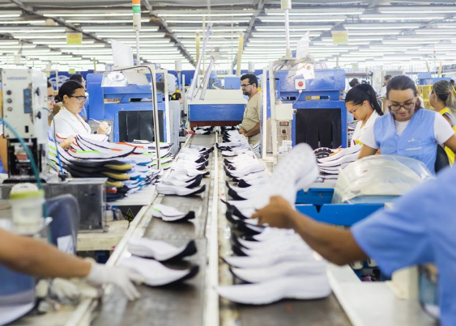
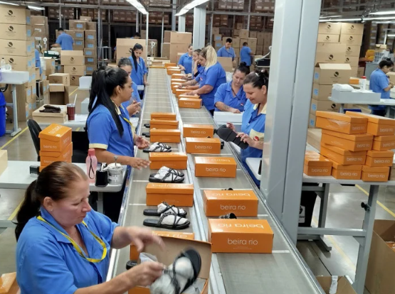

MAPEIE A PRODUÇÃO
Sua produção não bate a meta. O problema pode não estar onde parece.
Monte o fluxo, informe o que cada etapa consegue fazer e descubra onde vale investigar primeiro. Depois, teste uma mudança antes de mexer na operação.
✓ Sem cadastro
✓ Dados não salvos
✓ Comece com o que já sabe
LINHA 01 · CALÇADO
Primeiro ponto para investigar
Costura
Faltam 40 pares/dia para a meta demonstrativa
Atende Abaixo da meta
DO CHÃO DE FÁBRICA À DECISÃO
Feito para quem vive linha, esteira, ritmo e meta do dia.
O Moldar nasceu para organizar uma conversa comum na fábrica: onde a produção realmente aperta, o que vale conferir primeiro e como uma mudança em um setor afeta o restante da linha.
- Visual pensado para lembrar o ambiente real da produção.
- Foco em setores, fluxo, atelier, postos e pares por dia.
- Menos “cara de IA”, mais sensação de fábrica e operação.


DIRETO AO PONTO
Começar com meus dados
Você monta a análise em 5 passos.
O Moldar mostra uma coisa de cada vez. Nada de formulário gigante nem painel cheio de número antes da hora.
PASSO 1
Quanto precisa sair por dia?
Informe a meta, a jornada e os intervalos. O Moldar calcula o tempo disponível e o ritmo necessário para bater a meta.
Abrir simulador
UM “E SE?” EM 10 SEGUNDOS
Melhorar uma etapa pode apenas mudar o problema de lugar.
No exemplo, a Costura limita a linha em 460 pares/dia. Teste um posto a mais e veja o que muda.
Dados demonstrativos. Não representam produtividade média do setor.

Capacidade estimada da linha460/dia